MAS CHOLLAN
Be crazy about IT and don't hesitate to make your dreams come true. Believe in yourself, don't mind bad talk from other people who dropped you. remember that you will surprise the world with your work and cross your limits. because you are an IT enthusiast.
WISATA ALAM PEMALANG
1. WISATA BUKIT TANGKEBAN
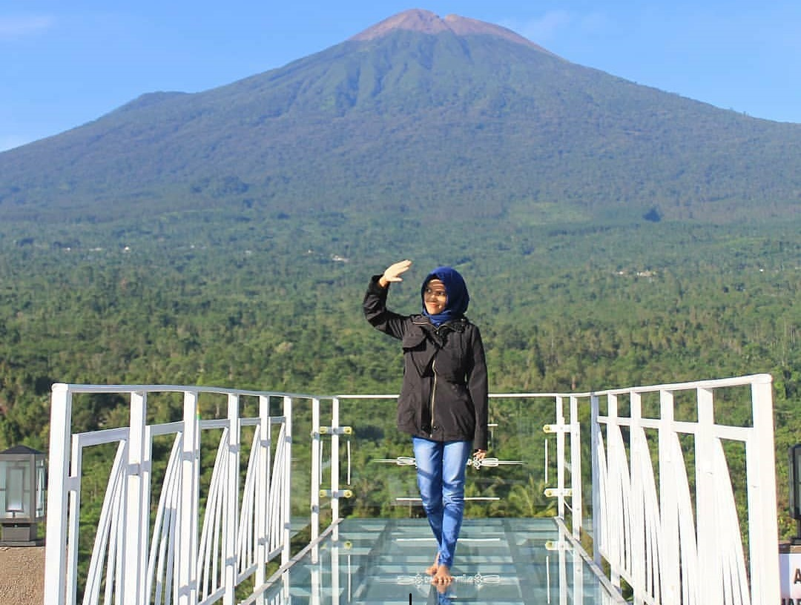Bukit Tangkeban
Tangkeban berarti sebuah pintu. Sesuai dengan namanya, Tangkeban memang berada tepat di pintu masuk bagian selatan Pemalang. Awalnya, bukit yang berada di Desa Nyalembeng, Kecamatan Pulosari, Kabupaten Pemalang ini sama sekali tidak terawat. Padahal di puncaknya terdapat sebuah Surau yang seharusnya bisa digunakan untuk tempat ibadah. Sayang, bangunan tersebut tidak terpakai tanpa alasan yang jelas. Bahkan banyak sekali coretan tangan jahil di tembok Surau tersebut.
Setelah cukup lama tidak terawat, Bukit Tangkeban akhirnya dipoles oleh masyarakat hingga akhirnya memiliki wajah baru. Destinasi yang berada di ketinggian sekitar 1.250 mdpl ini memiliki banyak spot foto yang tentu saja instagenic. Tidak jauh beda dengan Bukit Kukusan, di sini ada gardu pandang yang bisa dijadikan tempat menengok keindahan Gunung Slamet. Sementara itu, di sudut lain juga ada spot foto keren dengan bentuk yang bervariasi mulai dari bintang, sayap dan banyak lainnya.
2. WISATA GUNUNG GAJAH
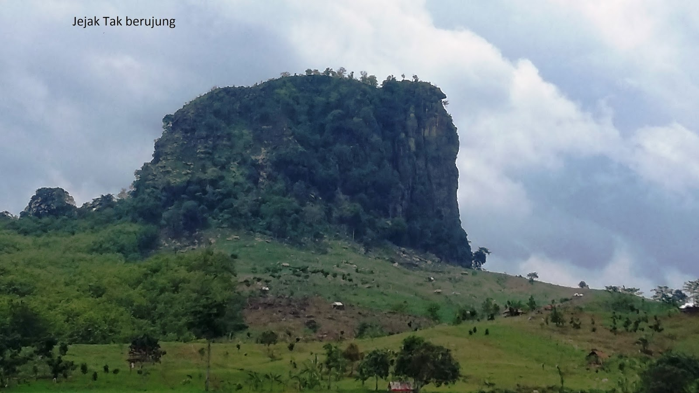Gunung Gajah
Gunung Gajah adalah salah satu gunung yang menjadi destinasi wisata di daerah Randudongkal kota Pemalang Jawa Tengah yang sudah sangat terkenal di mana lokasinya selain bisa anda kunjungi dengan akses jalan yang sudah baik akan tetapi di sini pun anda bisa Menikmati keindahan alam dan juga petualangan tracking yang sangat unik dan bikin asik.
Gunung Gajah disebut seperti salah satu nama hewan dikarenakan bentuknya memang Mirip seekor gajah sehingga sampai sekarang gunung Inipun terkenal sebagai Gunung Gajah malahan bagi Anda yang sangat suka dengan hobi motocross biasanya lokasi di sekitar Gunung Gajah memang direkomendasikan untuk kegiatan tersebut
3. WISATA BUKIT KUKUSAN
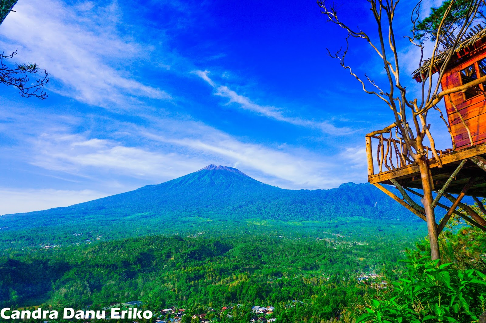Bukit Kukusan
Bukit kukusan merupakan wisata yang ada di Pemalang, bukit ini terletak di desa Gambuhan,kecamatan Pulosari,Kabupaten Pemalang. Akses untuk mengunjungi wisata ini termasuk mudah karena lokasinya yang berada di samping jalan raya Moga-Guci. Kalau kalian dari pemalang kota,wisata ini bisa ditempuh lewat lampu merah sirandu ke selatan lurus terus sampai melewati kecamatan Bantar Bolang dan Randu dongkal. Seletah melewati kedua kecamatan tersebut kalian akan masuk ke kecamatan moga. Sampai pertigaan SMPN 1 Moga (yang ada lampu merahya) ambil ke kanan arah Guci. Setelah belok kanan kalian akan masuk di jalan raya moga-guci, sekitar 10 menit dari lampu merah SMPN 1 Moga kalian akan sampai ke lokasi. Bukit kukusan berada di samping kiri jalan setelah tanjakan yang lumayan curam. Tidak usah khawatir, disamping jalan sebelum sampai ke wisata ini sudah dipasang baner yang cukup terlihat jelas.
Akhir-akhir ini Bukit Kukusan makin populer dikalangan wisatawan karena menawarkan spot-spot yang fotogenik. Banyak wisatawan yang datang kesini untuk berfoto di spot spot yang sudah dibuat oleh pengelola. Untuk sampai ke spot spot foto tersebut di puncak, kalian hanya perlu berjalan kaki sekitar 5 menit dari tempat parkir. jalurnya juga sangat mudah karena sudah dibuat berundak undak seperti tangga.
WISATA PANTAI PEMALANG
1. WISATA PANTAI WIDURI
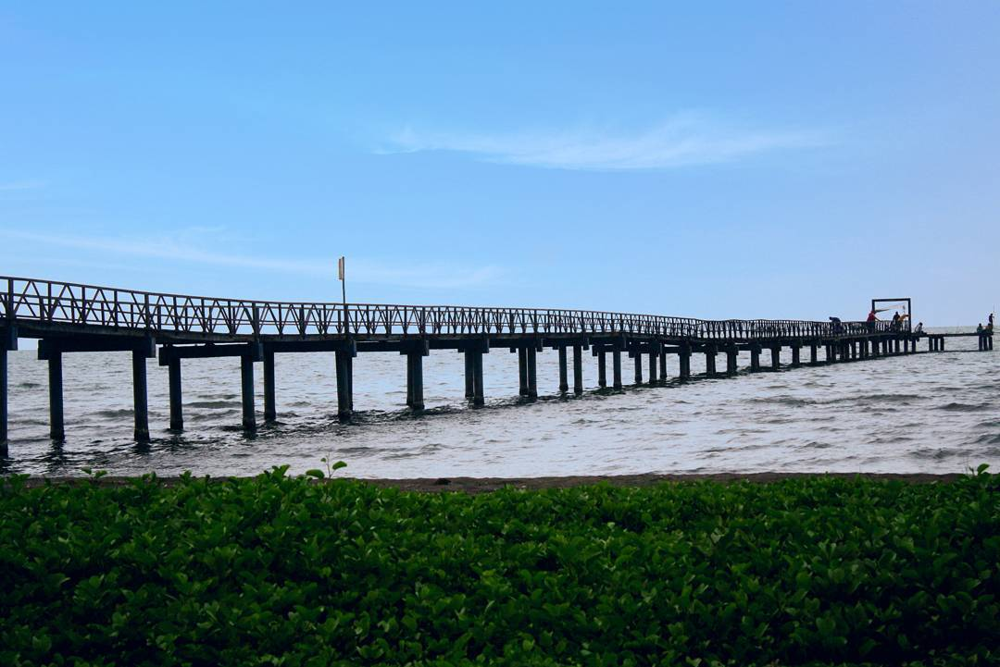Pantai Widuri
Pantai bernama Widuri ini merupakan destinasi wisata yang terkenal dan disinggahi oleh para wisatawan dan berada di Pemalang, Jawa Tengah. Lokasi pantai sangat strategis karena dekat dengan pusat kota. Dari alun-alun kota Pemalang, diperlukan sekitar lima sampai tujuh menit untuk menjangkau objek wisata ini. selain letaknya yang strategis dan mudah dijangkau, harga tiket masuk ke salah satu objek wisata pesisir ini tergolong terjangkau.
Sajian panorama pantai Widuri sangat mengesankan, di mana sepanjang pantai berjajar pepohonan nan hijau yang menambah kesejukan pantai. Anda dapat menikmati keindahan alam pesisir dengan debur ombaknya yang riuh menggelora, sambil duduk di tempat yang sudah disediakan. Nuansa pagi dan sore dengan menyaksikan sunrise dan sunset adalah momen istimewa yang tak boleh terlewatkan. Pasir pantai yang lembut, dapat digunakan untuk membuat istana pasir, rumah-rumahan, dan kreasi lainnya.
2. WISATA PANTAI JOKO TINGKIR
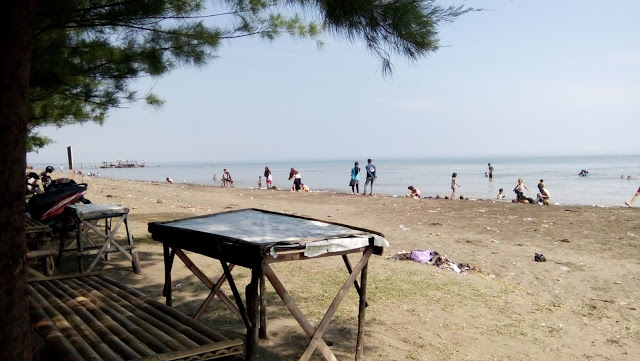Pantai Joko Tingkir
Kurang lebih berjarak 5-6 KM dari Jl. Raya Petarukan Pantai Joko Tingkir siap menyambut kedatangan kalian. Pantai yang berada di Desa Nyamplungsari ini dapat dijangkau tidak kurang dari 15 menit saja dari Jl. Raya Petarukan melalui jalan Desa Tegal Mlati dan Loning yang relatif lebih bagus dibandingkan akses jalan dari Petarukan via Keboijo dan Bulu. Jalan via Tegal Mlati hanya beberapa titik saja yang mengalami kerusakan. Selebihnya jalannya dalam keadaan bagus.
Area Pantai Joko Tingkir ini tidak terlalu luas. Garis pantainya saja kurang lebih 100m saja. Meskipun demikian, pantai ini lebih siap menyambut para pengunjung jika dibandingkan dengan obyek wisata di kelurahan Joko Tingkir yang bernama Pantai Kramat Sumur Pandan. Di Pantai Joko tingkir sudah menggunakan sistem karcis dengan pengaturan yang lebih tertib. Area parkir juga sudah tersedia. Faslitas umum lainnya berupa toilet juga sudah tersedia. Fasilitas lain yang disediakan di pantai ini adalah beberapa ayunan dan perosotan untuk anak-anak. Jika sudah di dalam maka terlihat lebih rapi.
3. WISATA PANTAI BLENDUNG
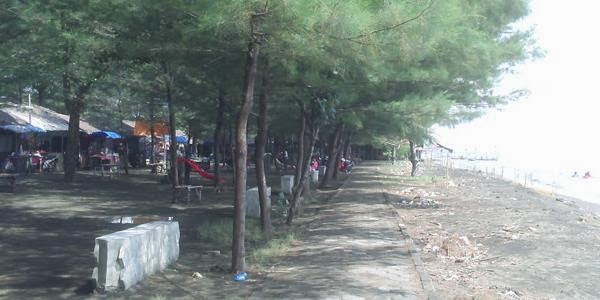Pantai Blendung
Desa Blendung adalah desa di kecamatan Ulujami, Pemalang, Jawa Tengah, Indonesia. Pada desa ini terletak obyek wisata Pantai Blendung, yang merupakan muara dari Sungai Pemalang.
Kondisi pantai ini masih cukup alami dan berhawa sejuk karena cukup rindang pohon-pohon yang ada di kawasan tersebut sehingga masyarakat menjadi nyaman. Hamparan pasir di sepanjang tepi pantai biasanya menjadi mainan bagi setiap masyarakat yang mengunjunginya. Pantai Ini tak kalah juga dengan Pantai Widuri.
Fasilitas yang saat ini terdapat di sana di antaranya adalah gardu pandang yang dapat digunakan untuk menikmati pemandangan laut luas yang indah dari ketinggian.Wisata Pantai Blendung sangat cocok di jadikan tujuan wisata keluarga disaat akhir pekan.
WISATA AIR PEMALANG
1. WISATA WIDURI WATERPARK
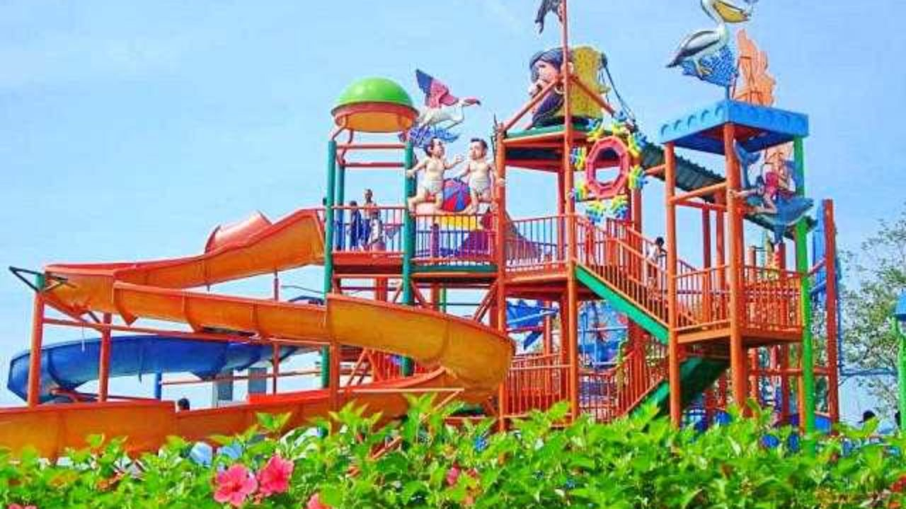Widuri Waterpark
Tak jauh dari Pantai Widuri Pemalang, ada wisata yang ramai dikunjungi pelancong. Tempat ini bernama Widuri Water Park, destinasi yang menawarkan rekreasi air untuk keluarga. Selain sangat ramah anak, taman wisata permainan air ini pun dapat dinikmati oleh orang dewasa.
Salah satu wahana yang pasti disenangi anak-anak. Ya, menara air di kolam yang tak terlalu dalam. Ada sejumlah permainan di kolam ini, di antaranya air mancur, hingga perosotan-perosotan pendek. Wahana ini pun bisa dijadikan wadah untuk mengenalkan air pada anak balita.
Di kolam ini, ada pula terowongan-terowongan mini. Setiap jalan menuju menara ini terpercik air hujan hingga bermain air makin asyik. Ada pula ember tumpah yang siap mengguyur air dalam volume besar. Siraman air dalam jumlah banyak ini pun menambah keceriaan bermain.
2. WISATA ZATOBAY WATERBOOM
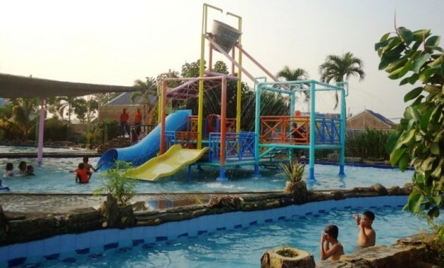Zatobay Waterboom
Zatobay Waterboom adalah satu diantara icon pariwisata di kabupaten Pemalang, beralamatkan di Jl. Wahid Hasyim no 17 Kelurahan Wanarejan, Kecamatan Taman, kabupaten Pemalang.
Zatobay pertama kalinya rilis pada tanggal 8 Agustus 2012, yang dilatar belakangi minimnya wahana bermain, rekreasi serta pendidikan aquatic yang ada di pemalang, jadi diinginkan ada wahana air zatobay waterboom ini bisa mengakomodasi keperluan tersebut”. Dengan tagline “Taman wisata air serta kolam renang pendidikan.
Zatobay berupaya wujudkan hal itu. Sebagai pusat rekreasi keluarga, Zatobay sediakan sarana kolam renang anak (kids pool) yang diperlengkapi dengan air mancur dari kanan kiri kolam dengan pusat pancuran jamur, disebelahnya ada kolam ember tumpah yang tiap-tiap 2 menit bakal menumpahkan air, diperlengkapi dengan tempat tinggal pancuran hingga anak anak bisa bermain serta berbasah ria dengan senang. Ada slider mini serta slider lengkung sangat mungkin anak mengasah keberanianya. Dari ke-2 kolam tersebut di lingkupi dengan kolam arus, selama lebih kurang 300 m.
3. WISATA KOLAM RENANG COMAL BARU
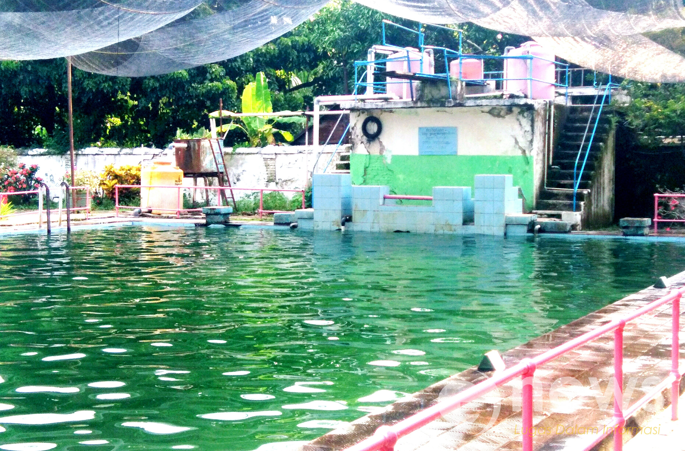Kolam Renang Comal Baru
Jika anda datang ke daerah Pemalang khususnya di kecamatan Comal, anda akan menemui tempat kolam renang di Comal baru. Tempat ini merupakan salah satu tempat untuk berekreasi yang biasanya dikunjungi warga sekitar untuk berwisata air bersama keluarga atau teman. Meskipun bisa dikatan sebagai daerah kecil di pesisir pantai utara, tempat ini cukup ramai. Namun, ditempat ini juga sangat dekat dengan kisah mistis yang sangat terkenal untuk warga sekitar. Misteri kolam renang comal baru memang cukup terkenal sejak dahulu karena disini ada banyak kisah mistis yang berkaitan dengan makhluk astral dan ada kaitannya dengan korban pada jaman penjajahan Belanda tempo dulu.
WISATA CURUG PEMALANG
1. WISATA CURUG BENGKAWAH
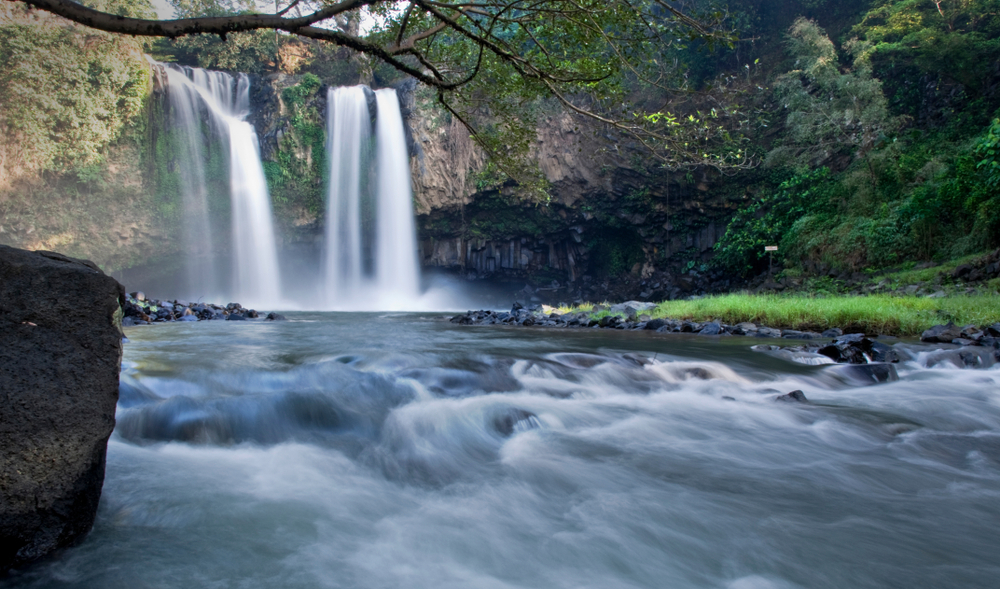Curug Bengkawah
Curug yang pertama masik kedalam list Curug terbaik di Pemalang adalah Curug Bengkawah. Curug yang satu ini oleh masyarakat sekitar disebut juga dengan nama curug kembar. Hal ini karena curug yang satu memiliki dua aliran air terjun yang saling berdekatan.
Aliran air yang dimiliki oleh curug yang satu ini juga tergolong sangat deras. Jadi jika kita bermain kesini sebaiknya tetap berhati-hati jangan lupakan keselamatan. Curug yang satu ini sendiri memeiliki ketinggian kurang lebih 20 meter, serta kedalam kolam yang berada di bawah alirn curug sendiri sekitar 3 meter. banyak bebatuan yang cukup licin berada di dalam kolam sehingga kita harus berhati-hati saat mencari pijakan kaki saat berenang.
Selain disebut curug “kembar”, curug yang satu ini juga mendapat julukan “perawan” dari masyarakat sekitar. Hal ini berhubungan dengan aliran air yang dimiliki oleh curug yang satu ini tak pernah kering, meskipun dalam musim kemarau. Suasana di sekitar curug juga masih sangat asri dan alami, banyak pengunjung yang menggunakan kawasan sekitar curug sebagai camping ground untuk menikmati keindahan curug di malam hari.
2. WISATA CURUG SIBEDIL
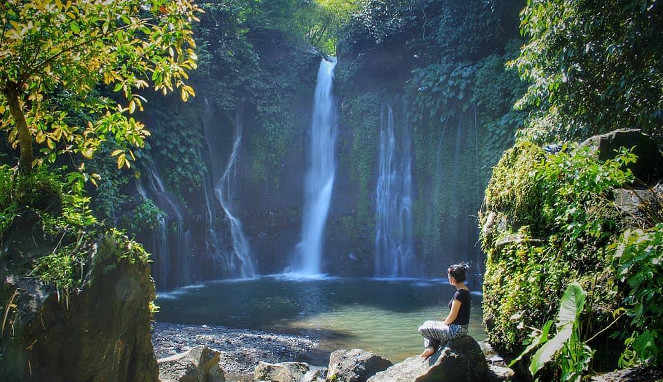Curug Sibedil
Satu lagi curug terbaik di Pemalang yang bisa kita kunjungi. Curug yang satu ini bisa dibilang seperti versi mininya air terjun madakaripura. Hal ini karena di curug yang satu ini kita bisa menemukan banyak sekali pancuran aluran air yang makin menambah indah suasana. Curug yang satu ini selain memliki keindahan yang sangat menarik, juga memiliki banyak cerita yang juga menarik.
Ada beberapa versi mengenai asal-usul dari nama curug ini. Ada yang bilang bahwa nama curug ini berasal dari suara air terjun yang seperti meriam. Ada juga yang bilang bahwa nama ini berasal dari sebuah batu yang berbentuk seperti moncong meriam. Manapun versinya adalah benar tergantung kita percaya yang mana. Namun yang pasti disepkati adalah keindahan curug ini, dengan susana yang masih sangat asri dan alami. Curug ini merupakan sebuah surga yang masih sangat tersembunyi di Kota Pemalang.
3. WISATA CURUG SEJAJAR
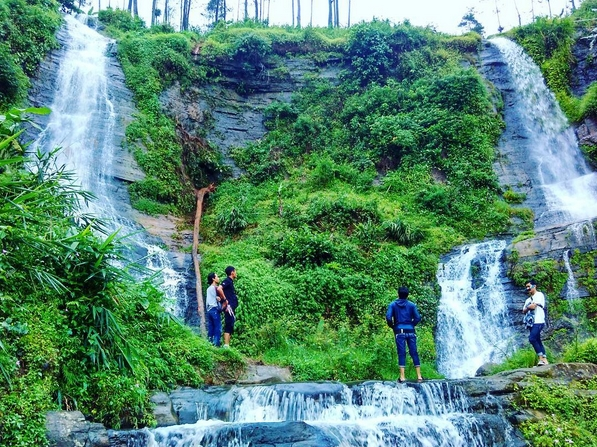Curug Sejajar
Curug yang satu ini merupakan salah satu curug yng bisa dibilang unik. Hal ini karena curug sejajar memiliki dua buah ari terjun yang berdampingan. Kedua aliran air terjun ini memang terlihat kembar dan sama satu sama lain. Keindahan lain yang dimili oleh curug ini adalah alamnya yang mash sangat asri dan alami. Kita masih bisa melewati hutan-hutan pinus yang sangat asri dan hamparan sawah penduuk yang makun menambah suasana sangat nyaman. Curug yang satu ini terletak di Desa Badak yang juga merupakan sentra gula merah di Pemalang.
Aliran curug yng satu ini memang tak terlalu deras, tapi bebatuan yang berada di curug tersebut bisa dikatan licin. Jadi kita juga harus waspada dan berhati-hati saat bermain di sekitar bebatuan curug tersebut. Meski kedua aliran curug ini terlihat berbeda, namun pada satu titik aliran curug ini menjadi satu kembali dan menjadi satu aliran yang cukup deras.
SUPPORT US
Share This Article
 Keren
Keren
 Terimakasih
Terimakasih
 Menarik
Menarik
 Bingung
Bingung
 Error
Error
Comment This Article
3 Komentar
© Cavvos Themes by Mas Chollan - Team RPL SAPRA 2 Petarukan, Pemalang, Indonesia